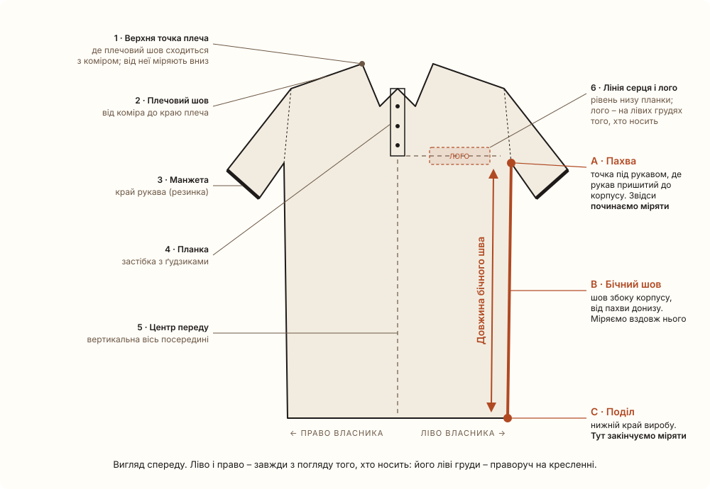
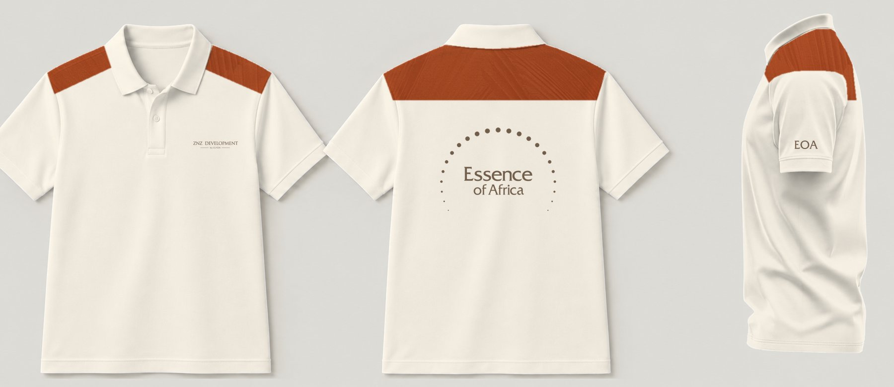
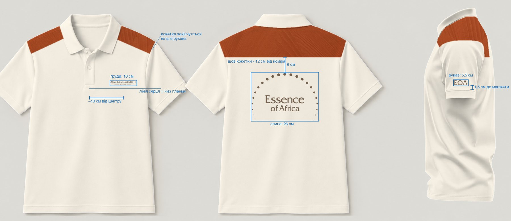
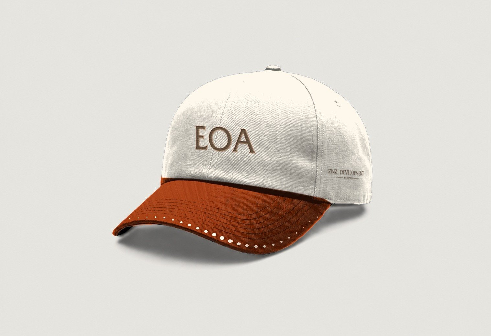
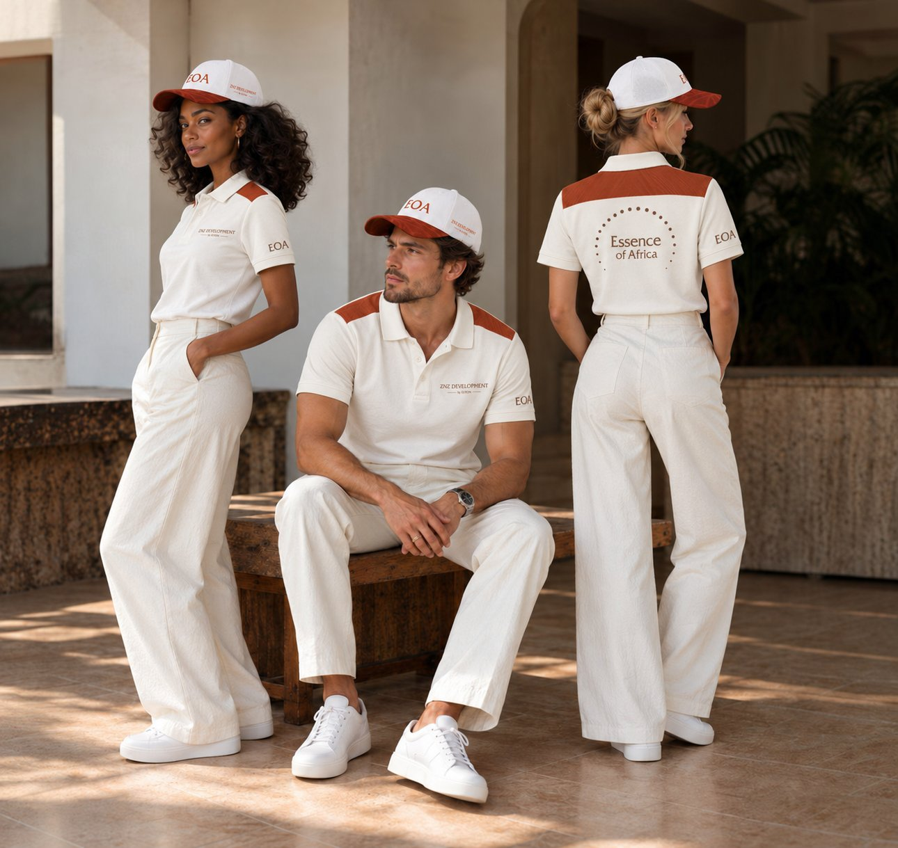

Мерч – стандарт роботи
Загальні правила, без прив'язки до бренду: наш досвід роботи над мерчем (31 правка, 4 фінальні комплекти, прототип і генерація на людях). Мітки біля пунктів: Insight – наш внутрішній висновок: правило вийшло з правок, фідбеку клієнта або рев'ю; стандарт – індустріальна норма.
0. Порядок роботи
Три кроки: Claude робить точний дизайн → GPT переносить його на людей → збираємо презентацію.
Крок 1 · Флети в Claude
Крок 2 · Люди в GPT
- Даємо фото з людьми + флети окремими картинками (перед, спина, бік – не колажем).
- У запиті перелічуємо, що змінити (лише поло, кокетка до швів, лого) і що не чіпати (обличчя, пози, світло, сцена, композиція).
- Робимо одну генерацію і перевіряємо на зумі: шви, комір, лого, всі люди в кадрі. Якщо треба – правимо запит і повторюємо.
- AI криво пише дрібний текст – такі лого замінюємо векторними з тінню тканини.
Пріоритет – ChatGPT Image 2.0 (станом на 29.10.2026): через Codex, з підписки ChatGPT, без окремого ключа. Дає природнішу і точнішу картинку.
Nano Banana Pro – тільки запасний варіант: у тесті дала багато смазів і штучнішу картинку.
Крок 3 · Збірка: Figma або PDF через Claude
Claude збирає слайди 1920×1080 за шаблоном і друкує в PDF у «Завантаження».
Порядок слайдів:
- Обкладинка з груповим кадром.
- Флет-борд для кожного варіанта: поло в 3 ракурсах + кепка на сірому полі.
- «Идея»: ідея, вигляд з кожного ракурсу, логотипи, кольори і розмітка.
- 2–3 кадри на людях.
Текст – мовою клієнта (EoA – російська). Перед відправкою переглядаємо всі сторінки.
1. Art direction мерчу
- Мінімум 2 логотипи на виріб: материнський бренд (девелопер) і бренд проєкту. Приклад: ZNZ Development + Essence of Africa.
- Кожен ракурс несе фірмовий елемент – лого, графіку, колір або фактуру бренду.
Ідея
- Одна велика графічна ідея на виріб. Герой – фірмова графіка, фактура або колір бренду, а не набір дрібних логотипів. Клієнт назвав варіант з 3–4 малими лого «кулі на ялинці», він виглядає рекламно і стандартно.Insight
- Впізнаваність здалеку і з будь-якого ракурсу. Перед, спина і бік мають фірмовий елемент. Бренд не має читатися тільки з мікронапису.Insight
- Логотипи маленькі й спокійні, графіка велика. Лого підписує річ, героєм воно не є.Insight
- Тематично, але без буквальної етніки. Беремо метафори бренду (сонце, горизонт, земля, фактура місця), а не готові орнаменти.Insight
- Техніка підсилює преміальність: вишивка, тональна вишивка, puff, сублімація фактур, тканий лейбл.Insight
Паттерни бренду
Паттерни з брендбуку можна і варто використовувати як додаткову текстуру на речах. Це дає великий фірмовий елемент без зайвих логотипів.Insight
- Де: кокетка, рукави, козирок кепки, бічні вставки, весь виріб (all-over), смуга по подолу чи манжетах.
- Техніка: сублімація або вставка тканини з принтом.
- Масштаб: такий, щоб тайл не повторювався в межах виробу.
- Контраст: темні фактури (наприклад, кора баобаба) підіймати, інакше на тканині їх не видно.
- Приклади з практики: Red Earth Sleeves і Sunrise Yoke (фактура Red Earth), Baobab All-over (кора баобаба), Horizon (ряд точок з паттерна).
Логотипи – як комбінувати
- Якщо брендів два (материнський і проєкт), лого щонайменше два. Базова схема: корпоративне лого на грудях, бренд проєкту великим на спині, монограма на рукаві.Insight
- Кепка: одне лого спереди, друге збоку. Не ставити обидва на перед.Insight
- Монограма – окремий носій: рукав, бік кепки, козирок. Повне лого з дугою – на спину.Insight
- Лого або графіка на плечі: окремого правила в нас поки нема. Ближче всього Shoulder Sun (дуга через плече) і кокетка з прототипу Sunrise Yoke. Тож це можна пропонувати як окремий напрям.стандарт
Композиційні рішення, що спрацювали (банк форм)
| Форма | Що це | Що видно з ракурсів |
|---|---|---|
| Side Path | Ряд великих елементів по боковому шву, що зменшуються до подолу | Обов'язково заходить на перед і спину на 5–10 см, інакше спереди і ззаду порожньо |
| Textured Sleeves | Рукави з фактури або кольору бренду | Видно з усіх трьох ракурсів |
| Hem Horizon | Ряд точок по подолу і такий самий над манжетами | Перед, спина, бік; один колір точок, акцент – окремим варіантом |
| All-over | Суцільна фактура на весь виріб, лого світлим | Все; контраст фактури треба підняти |
| Big Back | Велика дуга або емблема на спині | Спина; перед тримає лого на грудях |
| Over-shoulder | Графіка, що переходить через плече | Перед і спина одночасно |
| Colour Block | Корпус одного кольору, рукави іншого | Все |
| Full-back emblem | Знак на всю спину (~50 см), лого в центрі | Спина |
| Кепка two-tone | Корона світла, козирок фірмового кольору, лінія точок по краю козирка | Перед, бік |
Кольори
- Тканина і друк – тільки з палітри бренду. Колір поза палітрою (як navy в EoA) треба погодити і внести в логобук з Pantone.Insight
- На темній тканині – світлий друк, на світлій – темний (найтемніший або коричневий колір бренду).Insight
- Білий – справді білий. Сірий допустимий тільки в складках.Insight
- Акцентний колір в одному ряду елементів – окремий варіант, а не дефолт.Insight
Подача і процес
- Кожен варіант – у трьох ракурсах: перед, спина, бік. Вид збоку обов'язковий, коли є щось на рукаві.Insight
- Фото-мокап, а не векторна схема. Векторне поло клієнту здалося несправжнім.Insight
- Фінал – комплект (поло + кепка в одній логіці) з рядками «Ідея / Фідбек / Логотипи / Кольори». Для клієнта в PDF додавали lifestyle-кадр з моделями.Insight
- Партії по 3–4 варіанти. Нове розміщення – новий ряд варіантів, а не правка старих (наприклад, кепки «лого по центру» і «лого збоку» йдуть окремими серіями).Insight
- Перед рендером – матриця «ракурс → що видно» і перевірка «≥2 лого».Insight
2. Розміщення – пропорції та відступи
Розміри для M. Сторону завжди називаємо з погляду того, хто носить: «ліві груди» – праворуч на фото спереди.Insight
Схема: точки і як міряти

Довжину бічного шва міряють від пахви (A) вниз уздовж шва (B) до нижнього краю (C). Номери 1–6 – точки, від яких рахуються відступи в таблицях нижче.
Поло / футболка
| Зона | Розмір | Де саме, від чого відступ | |
|---|---|---|---|
| Лого на грудях | 8–10 см завширшки (горизонтальне лого); 6–8 см компактний знак | Ліві груди власника. Центр по вертикалі – «лінія серця» ≈ рівень низу планки (~18–22 см від верхньої точки плеча). Центр по горизонталі ~10–13 см від центру переду | Insight + стандарт для см від плеча |
| Під коміром ззаду | 6–8 см | 3–5 см нижче шва коміра, по центру | стандарт |
| Спина, емблема | 25–30 см (до 30–40 см) | Верх – 6–8 см нижче коміра або шва кокетки; по центру | Insight |
| Спина на всю ширину | ~50 см | Майже від шва до шва, лого в центрі знака | Insight |
| Монограма на рукаві | ~5,5 см | Один напис по центру зовнішньої сторони рукава, низ 1,5–3 см над резинкою манжети, букви вгору до плеча. Напис огинає рукав: спереди видно кінець, ззаду – початок | Insight |
| Бічна дуга (Side Path) | Елементи 1–4 см, зменшуються донизу | Від пахви до подолу вздовж бокового шва, заходить на перед і спину на 5–10 см | Insight |
| Ряд по подолу | Точки 0,5–2 см | 2–4 см над подолом; такий самий ряд 1,5–2 см над манжетами | Insight (розміри орієнтовні) |
| Кокетка / вставка-панель | Глибина на спині ~10–12 см від коміра | Заходить під комір (комір лишається кольору корпусу і лежить поверх панелі, без плям на самому комірі). З боків закінчується точно на шві рукава, не переходить на рукав. Те саме для кольорових рукавів: межа – по шву | Insight |
| Фактура / all-over | – | Масштаб такий, щоб тайл не повторювався в межах виробу. Тайл – базовий фрагмент малюнка, який повторюють, щоб заповнити тканину, як плитку на підлозі. «Не повторювався» означає: малюнок настільки великий, що на одній готовій речі (наприклад, на всій сукні чи футболці) цей фрагмент поміститься лише один раз. Інакше на тканині видно шви між повторами і однакові плями. | Insight |
Кепка
| Зона | Розмір | Де саме | |
|---|---|---|---|
| Спереди по центру | 9–11 см завширшки, до 5,5 см заввишки | По центральному шву двох передніх панелей, низ 1,5–2 см над швом козирка; вигин – по корпусу | Insight (вигин) + стандарт (см) |
| Збоку | 4–6 см | Внизу бічної панелі, ближче до козирка, паралельно лінії козирка | Insight |
| Передньо-бічна панель | 5–7 см | Унизу правої передньої панелі біля козирка, стискається до шва | Insight |
| Козирок | Точки 3–5 мм | Лінія по краю козирка, ~1 см від краю | Insight |
3. Розмірна сітка
Розмірної сітки в нас поки нема. Є тільки орієнтовні сантиметри для розміру M. Для виробництва потрібні техпаки на кожен виріб.
Що пропоную як стандартстандарт: лого на грудях і рукаві – один розмір на всі розміри одягу; великі принти (спина, бік) – два розміри: S–M базовий, L–XXL +10–15%; відступи від коміра, планки і манжети – ті самі. Це фіксується в техпаку на кожен виріб.
4. Референси: запити для Pinterest
Напрями, з якими ми працювали: Sun Path, Side Arc, Sunrise → Sunset, тематичний принт, tone-on-tone, кепки. Запити англійською – так Pinterest дає більше якісних результатів.
| Напрям | Запити |
|---|---|
| Бічний принт (Sun Path, Side Arc) | side seam print polo · side panel graphic t-shirt · wrap around print shirt · dotted line side print apparel · asymmetric side graphic tee |
| Велика графіка на спині (Sunrise) | large back print polo · oversized back graphic minimal · sunrise arc back print · hotel staff back print shirt · back emblem uniform design |
| Через плече / кокетка | shoulder yoke contrast polo · over the shoulder print t-shirt · contrast yoke shirt design · raglan shoulder graphic |
| Фактурні рукави, colour block | contrast sleeve polo shirt · textured sleeve print · color block polo uniform · two tone polo staff |
| Подол і горизонт (Horizon) | hem print polo · border print shirt hem · dotted hem detail apparel · cuff stripe polo |
| Тематичний принт | resort staff uniform print · tropical texture all over print shirt · bark texture print apparel · earth tone all over print polo |
| Tone-on-tone / тихий преміум | tonal embroidery polo · tone on tone logo shirt · minimal luxury hotel uniform · embossed logo polo |
| Кепки | two tone baseball cap embroidery · side logo cap · embroidered visor cap · sandwich visor cap · cap monogram embroidery · puff embroidery cap |
| Подача | staff uniform lookbook · hospitality uniform campaign photo · polo flat lay mockup front back side |
Як збирати дошку
- Окрема дошка на кожен напрям (бічний принт, спина, кепки), а не одна велика. Так легше показати клієнту вибір.
- Шукати форму, а не бренд. Важливо, де і як лежить графіка; колір і логотип чужого бренду ігноруємо.
- 10–20 пінів на дошку, з них 3–5 найсильніших позначити – вони йдуть у бриф.
- Додавати фото на людях, не тільки флети: на тілі видно, чи читається принт здалеку і збоку.
- Відкривати «More like this» на найкращому піні – Pinterest підтягує схожі рішення точніше, ніж новий запит.
- Готову дошку вивантажувати архівом зображень (архів PNG) – так її можна дати агенту.
5. У якому форматі приймати файли
| Що | Формат | Якість / що просити наступного разу |
|---|---|---|
| Логотипи | SVG окремими файлами (основне, горизонтальне, знак, монограма, дуга, компас, лого девелопера) | Добре. Деякі SVG мають білий фон-прямокутник – прибирати |
| Брендбук | PDF логобук (11 стор.) | Добре – джерело палітри і правил |
| Паттерни | PNG 940×540 + частина SVG | Мало для all-over – просити 4000+ px або вектор |
| Мокапи | Скриншоти PNG 466–1905 px; найкращий – біле поло перед/спина/бік одним кадром (1905×826) | Просити білі мокапи 3000+ px, кожен ракурс окремо |
| Ескізи дизайнера | SVG перед / спина (Front_side, Back_side) | Зручно – переносяться 1:1 |
| Референси | ZIP з 18 PNG з Pinterest | Ок |
| Подача клієнту | PDF: lifestyle-кадр з моделями + флет-мокап перед/спина/бік, кепка на людині + предметно | Взірець фінальної подачі |
6. Як накладати графіку на мокап
- База – білий мокап у високій роздільності, перед, спина і бік в одному світлі, на однотонному фоні. Найгірше перефарбовується чорне в біле: виходить сірий колір і плями.Insight
- Окреме фото спини і боку. Спина, зібрана з фото переду, дає артефакти: слід планки, «приклеєний» комір.Insight
- Маска тканини – за нейтральним відтінком: фон і тіні теплі, тканина нейтральна. Фон під краями відновлювати, щоб не було ореолів.Insight
- Колір тканини – множенням на яскравість фото. Для темних кольорів посилювати контраст складок, інакше тканина пласка.Insight
- Друк = колір фарби × тінь тканини + легке зерно, обрізаний маскою тканини. Так принт лягає у складки. Вишивка на кепці – фактура гладі + рельєф.Insight
- Вигнуті поверхні (рукав, кепка): циліндрична проєкція; на кепці лінія козирка – еліпс з нахилом, графіка йде паралельно козирку і стискається до шва.Insight
- Лого – тільки з вектора, не з чернеток-скриншотів (у мокап потрапила біла плашка з чернетки). Після будь-якої обробки порівняти з оригіналом: один раз «з'їлися» букви E, L і лінії.Insight
- Панелі й кольорові зони йдуть по крою: межа – по шву (рукав, кокетка, бік), під коміром – не на коміри. На мокапі спершу обвести шви і комір на зумі з підвищеним контрастом, а тоді будувати маску; комір вирізати з маски окремо.Insight
- QA на зумі: немає ореолів, рваних країв, сірих плям; білий – білий; графіка паралельна швам; розміри реалістичні.Insight
7. Прототип за цими правилами: Sunrise Yoke
Нова ідея, зібрана тільки з правил вище, матеріалів бренду і референсів.

Розмітка розміщення

Що ще не зроблено в цьому прототипі:
- Монограма EOA, яка огинає рукав: зараз її видно тільки збоку, а за правилом спереду має читатися «…OA», ззаду «EO…».
- Обмеження мокапа: одне фото 1905 px на три ракурси, тому дрібний текст на грудях читається погано. На мокапі 3000+ px буде чисто.
Кепка до комплекту: корона Limestone, козирок з тією ж фактурою Red Earth, що й кокетка, лінія точок по краю, EOA спереду, ZNZ збоку.

8. Люди в ChatGPT – результат
Крок 2 порядку роботи на практиці: флети з кроку 7 перенесені на моделей. Модель – ChatGPT Image 2.0, одна генерація.

Кадр з моделями з нашої попередньої презентації: ті самі люди і сцена, що в усіх варіантах.
Флет поло окремими картинками: перед, спина, бік.
- Одне фото з тією самою композицією, без колажу.
- Кокетка на всіх трьох людях, заходить під комір і закінчується на швах.
- Лого на спині і EOA на рукаві лягають як друк – по складках тканини.
- Люди, пози, світло і сцена не змінились.
- Дрібний підпис «by ELYON» на грудях спотворений – замінити векторним лого.
- Лого вийшли рудими (Red Earth), а не коричневими, як на флеті – вирішити, який колір лишаємо.